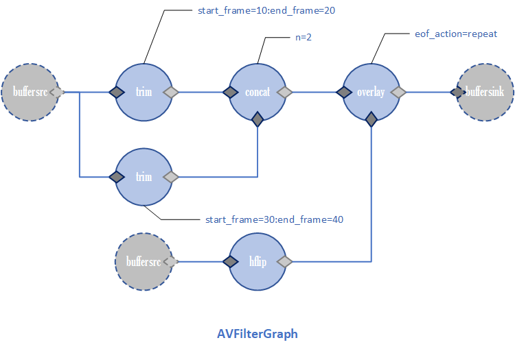

init_complex_filters函数
init_complex_filters函数遍历所有的滤镜图，调用init_complex_filtergraph函数进行复杂滤镜的初始化设置。
init_complex_filtergraph函数
avfilter_graph_alloc首先创建一个临时的FilterGraph中的AVFilterGraph变量（存储实际的滤镜图），用于graph_parse函数把输入的滤镜图描述符，解析到AVFilterInOut inputs, outputs。inputs和outputs链表节点的个数对应于一个滤镜图的输入buffer和输出buffersink的个数。
遍历输入滤镜，init_input_filter函数初始化每个输入滤镜。根据[1:v]这样的输入参数（以此为例），选择全局输入文件数组input_files中下标为1的输入文件，对应的视频流（InputStream *ist）。
ALLOC_ARRAY_ELEM函数给FilterGraph中的InputFilter inputs输入滤镜指针数组扩容分配内存，将选择的输入流ist和滤镜图赋值给给新创建的InputFilter的成员变量。av_fifo_alloc2给这个新创建的InputFilter申请大小为8帧缓冲队列内存。因为在未调 avfilter_graph_config() 函数正式打开滤镜容器之前，一个流发送给滤镜的数据都会先缓存到 frame_queue 队列里面，等到打开了滤镜容器后，把他们全部送给滤镜容器。**
给全局输入文件数组input_files中下标为1的输入文件，对应的视频流（InputStream ist）的InputFilter *filters扩容分配内存，并将新创建的InputFilter绑定个这个输入流ist。
遍历所有输出滤镜，ALLOC_ARRAY_ELEM函数给FilterGraph中的OutputFilter outputs输出滤镜指针数组扩容分配内存，将滤镜图赋值给新创建的OutputFilter的成员变量。但是并没有执行输出滤镜和输出流的绑定。**
滤镜图中的AVFilterGraph graph和输入输出滤镜中的 AVFilterContext filter 还是 NULL。在configure_filtergraph函数中创建。
1 | int init_complex_filtergraph(FilterGraph *fg) { |
init_input_filter函数
init_simple_filtergraph函数
初始化简单滤镜，在of_open函数调用。简单滤镜只有一个输入文件，只需要遍历所有的流就可以。ost->enc_ctx && ost->ist才会进行调用init_simple_filtergraph函数。create_streams函数中复杂滤镜的ost->ist=NULL，所以一定不会进入到简单滤镜的初始化。
给简单滤镜分配内存并初始化一个FilterGraph（AVFilterGraph graph要等到configure_filtergraph函数）。ALLOC_ARRAY_ELEM给滤镜图的OutputFilter outputs分配内存，将输出流ost和滤镜图赋值给新创建的OutputFilter的成员变量。将输出滤镜赋值给输出流OutputStream的OutputFilter filter成员变量。**
ALLOC_ARRAY_ELEM给滤镜图的InputFilter inputs输入滤镜指针数组分配内存扩容，将输入流ist和滤镜图赋值给新创建的InputFilter的成员变量。av_fifo_alloc2给新创建的InputFilter申请大小为8帧缓冲队列内存。因为在未调 avfilter_graph_config() 函数正式打开滤镜容器之前，一个流发送给滤镜的数据都会先缓存到 frame_queue 队列里面，等到打开了滤镜容器后，把他们全部送给滤镜容器。**
GROW_ARRAY给输入流的InputFilter filters输入滤镜指针数组扩容并存储3.的输入滤镜指针；给全局滤镜图FilterGraph filtergraph数组扩容并将2.新创建的FilterGraph存到全局的FilterGraph **filtergraphs。
最终的滤镜图中的AVFilterGraph graph和输入输出滤镜中的 AVFilterContext filter 还是 NULL。在configure_filtergraph函数中创建。
1 | int init_simple_filtergraph(InputStream *ist, OutputStream *ost) { |
configure_filtergraph
- 复杂滤镜如下, 对应配置的滤镜图:
1
2
3
4
5
6[0]trim=start_frame=10:end_frame=20[v0];\
[0]trim=start_frame=30:end_frame=40[v1];\
[v0][v1]concat=n=2[v2];\
[1]hflip[v3];\
[v2][v3]overlay=eof_action=repeat[v4];\
[v4]drawbox=50:50:120:120:red:t=5[v5]

复杂滤镜的graph_desc就是命令行输入的滤镜参数。avfilter_graph_alloc()给fg->graph滤镜图中的AVFilterGraph *graph分配内存。首先是参数设置。简单滤镜先设置线程数和sws、swr参数，复杂滤镜只设置线程数.
graph_parse把命令行的滤镜参数解析为inputs和outputs链表的节点，链表节点数表示滤镜图的入口和出口数。
遍历每个入口和出口的节点，configure_input_filter和configure_output_filter分别给滤镜图的入口和出口加上buffer和buffersink滤镜，并用avfilter_link连接节点的pads。
avfilter_graph_config配置滤镜图，验证参数配置是否正确
在未打开滤镜容器之前，发送给滤镜的数据先缓存在 frame_queue 队列中。这里已经打开了滤镜容器，就遍历输入滤镜，循环从缓冲队列读取AVFrame然后av_buffersrc_add_frame送给滤镜容器进行处理。
遍历输入滤镜，如果某个输入滤镜已经eof了，就发送NULL到已经处理完毕的输入滤镜。
涉及部分结构体如下:
typedef struct AVFilterGraph { AVFilterContext **filters; // 每个滤镜实例的结构体指针 AVFilterLink **sink_links; ... } // 每个滤镜示例 struct AVFilterContext { const AVFilter *filter; // 具体的滤镜 AVFilterPad *input_pads; // 跟这个滤镜相连的入口连接点 AVFilterLink **inputs; // 入端的连接线 unsigned nb_inputs; // 入端个数 AVFilterPad *output_pads; // 跟这个滤镜相连的出口连接点 AVFilterLink **outputs; // 出端的连接线 unsigned nb_outputs; // 出端个数 } // 滤镜连接 struct AVFilterLink { AVFilterContext *src; ///< source filter AVFilterPad *srcpad; ///< output pad on the source filter AVFilterContext *dst; ///< dest filter AVFilterPad *dstpad; ///< input pad on the dest filter }
reap_filter函数
负责从出口滤镜里读取AVFrame，然后发送给编码器编码，最后保存进去文件。reap_filter函数会在两种情况下传进来flush=1参数.
- transcode_step函数中,根据输出流选择输入流的时候. transcode_from_filter函数里边,avfilter_graph_request_oldest查找滤镜链中请求失败次数最多的滤镜来确定输入流,返回了EOF表示处理完了
- ifilter_send_frame函数在进行滤镜图的初始化的时候,要刷新编码器
遍历所有的输出流，首先会初始化音频输出流。为什么先初始化音频输出流？
- 音频通常具有固定的采样率、通道数等属性，时间戳通常依赖于帧的时长和帧的采样率,这些属性在音频编码器（AVCodecContext）中通常在初始化时就已经确定好了。
- 视频的帧率、分辨率等属性可能是可变的，尤其是在处理视频滤镜时,时间戳通常依赖于帧率，而帧率可能是可变的，这些属性可能会被滤镜处理过程中的参数所影响。
- 综上，音频的输出流通常具有固定的属性，这些属性在音频编码器初始化时就已经确定好了，所以在初始化输出流时，不需要等待滤镜输出帧。而对于视频，由于属性可能会受到滤镜处理参数的影响，需要等待滤镜输出帧，获取帧的属性信息，然后才能初始化输出流（封装在do_video_out() 函数里面的）。
while循环调用av_buffersink_get_frame_flags从buffersink滤镜读取经过滤镜处理的frame.
对滤镜处理后帧的时间戳进行调整。然后根据帧的类型送到对应的do_video_out和do_audio_out进行编码并输出。
1 | // 这个函数返回EOF 其实就是 |